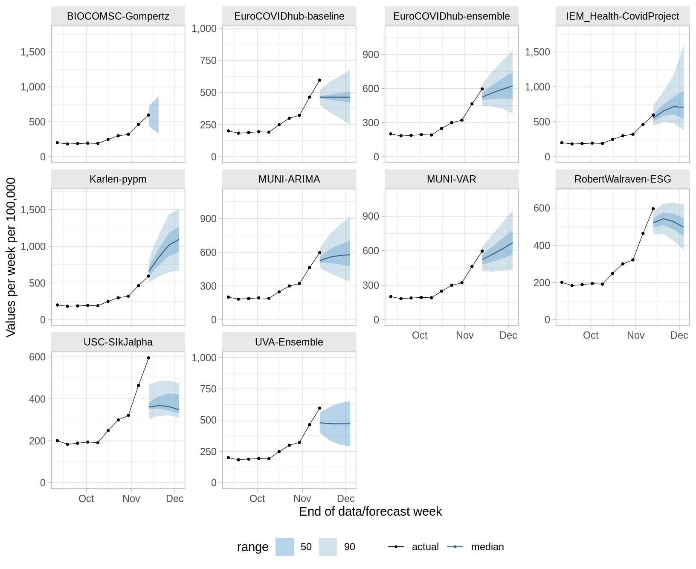
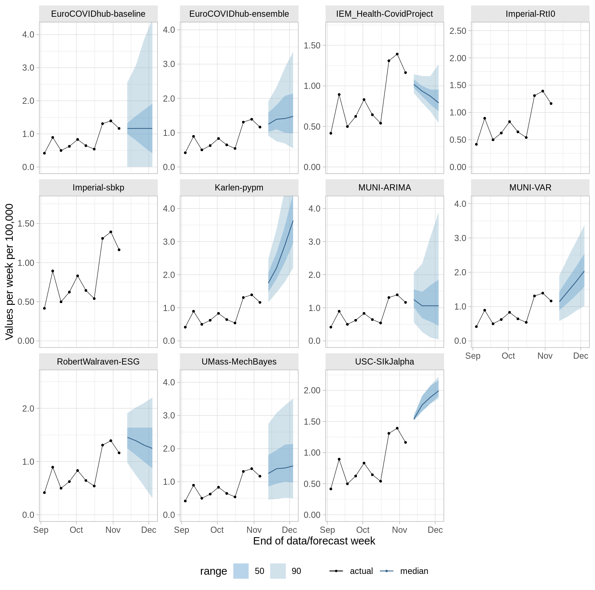
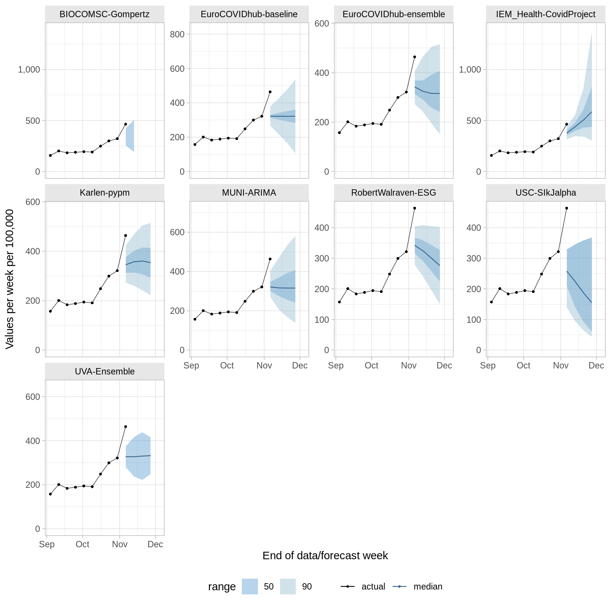
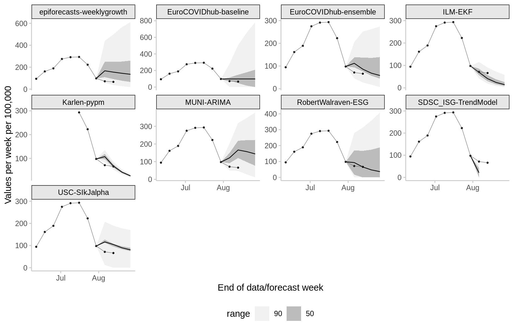
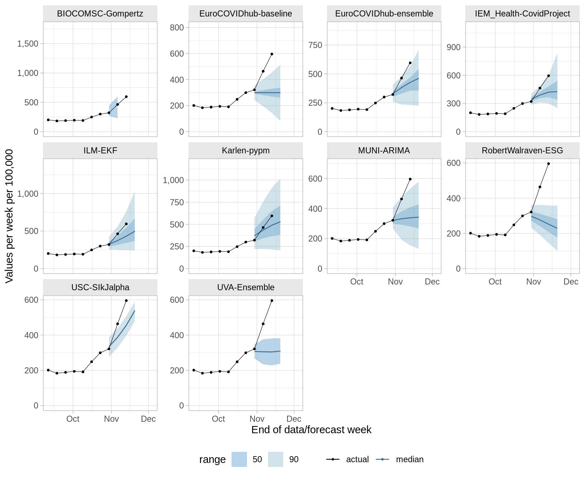
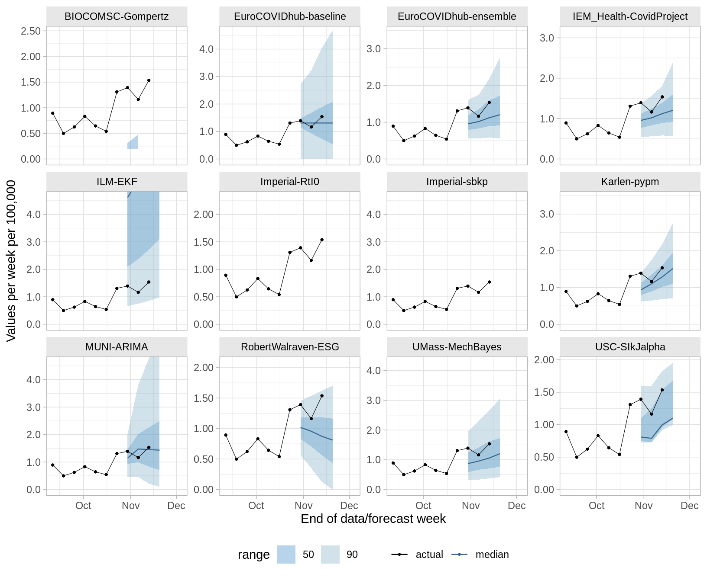

Choose the type of report you wish do view using the dropdown menu. The Model reports shows the recent forecasts and performance of the ensemble or individual models, whereas the Country reports shows model-by-model performance, either overall or by country. The reports get updated every Tuesday.
Forecasts of cases/deaths per week per 100,000. The date of the tab marks the date on which a forecast was made (only the latest forecasts and the previous 4 weeks shown). Click the Forecast tab above to view all past forecasts.






Scores separated by target and forecast horizon. Only models with submissions in each of the last 4 weeks are shown.
n gives the number of forecasts included in the evaluation. This number may vary across models as some models joined later than others, or models may not have submitted forecasts in certain weeks.rel_wis) is a relative measure of forecast performance which takes into account that different teams may not cover the exact same set of forecast targets (i.e., weeks and locations). Loosely speaking, a relative WIS of X means that averaged over the targets a given team addressed, its WIS was X times higher/lower than the the performance of the baseline model described in Cramer et al. (2021). Smaller values are thus better and a value below one means that the model has above average performance. The relative WIS is computed using a ‘pairwise comparison tournament’ where for each pair of models a mean score ratio is computed based on the set of shared targets. The relative WIS is the geometric mean of these ratios. Details on the computation can be found in Cramer et al. (2021).rel_ae) is the relative absolute error of the predictive point forecasts, that is the predicted value that individual forecasts deem the most likely. The relative AE is computed using a ‘pairwise comparison tournament’ where for each pair of models a mean score ratio is computed based on the set of shared targets. The relative AE is the geometric mean of these ratios. Details on the computation can be found in Cramer et al. (2021).50% Cov. / 95% Cov.) is the proportion of observations that fell within a given prediction interval. Ideally, a forecast model would achieve 50% coverage of 0.50 (i.e., 50% of observations fall within the 50% prediction interval) and 95% coverage of 0.95 (i.e., 95% of observations fall within the 95% prediction interval). Values of coverage greater than these nominal values indicate that the forecasts are underconfident, i.e. prediction intervals tend to be too wide, whereas values of coverage smaller than these nominal values indicate that the forecasts are overconfident, i.e. prediction intervals tend to be too narrow.bias) is a measure between -1 and 1 that expresses the tendency to underpredict (-1) or overpredict (1), see the description in Funk et al. (2019).If you would like to learn more about a model, you can go the the data-processed folder of the European Forecast Hub GitHub repository, select a model and access the metadata file with further information provided by the model authors.